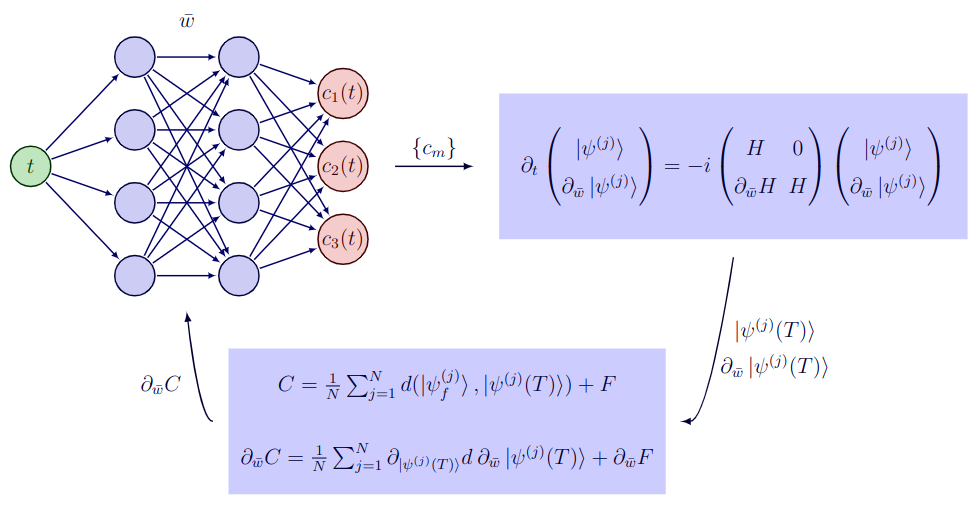

Gradient-based quantum optimal control
In this section, we describe in detail the optimization algorithm implemented in Sisyphus.jl.
A general QOC problem aims to find time-dependent control knobs to simultaneously guide the evolution of a given set of input states to some chosen target states subject to physical and hardware constraints. Let us denote the input and target states of the problem $|\psi^{(1)}_i\rangle, |\psi^{(2)}_i\rangle, \dots |\psi^{(N)}_i\rangle$ and $|\psi^{(1)}_f\rangle, |\psi^{(2)}_f\rangle, \dots |\psi^{(N)}_f\rangle$ respectively. Without loss of generality, the time-dependent Hamiltonian governing the dynamics of a quantum system can be written as,
\[H(t) = H_0 + H_c(t) = H_0 + \sum_{m=1}^{M} c_m(t) H_m.\]
The control drives $c_1(t), c_2(t), \dots c_M(t)$ define the unitary transformation:
\[U(\{c_m\}, T) = e^{-i \int_0^T H(t) \mathrm{d}t}.\]
The drives $\{c_k(t)\}$ are designed by optimizing a certain cost function. In practice, the cost function is chosen to reflect the quality of the desired transformation and by constraining the pulses:
\[C(\{c_m\}) = \frac{1}{N}\sum_{j=1}^{N} d(|\psi^{(j)}_f\rangle, U(\{c_m\}, T)|\psi^{(j)}_i\rangle) + F(\{c_m(t)\}),\]
where $d(|\psi^{(j)}_f\rangle, U(\{c_m\}, T)|\psi^{(j)}_i\rangle)$ is some distance measure and $F$ takes into account the experimental constraints such as bounds on control signals, finite bandwidth and power etc. The gradient of the cost function wrt the parameters is,
\[\frac{\partial C(\{c_m\})}{\partial w_k} = \frac{1}{N}\sum_{j=1}^{N} \frac{\partial}{\partial w_k}d\left(|\psi^{(j)}_f\rangle, |\psi^{(j)}(T)\rangle\right) + \frac{\partial F}{\partial w_k}.\]
where $|\psi^{(j)}(T)\rangle = U(\{c_m\}, T)|\psi^{(j)}_i\rangle$ and $w_k$ parameterize the control signals $\{c_m\}$. The second term in the above equation can be evaluated with standard AD techniques. The first term can be efficiently calculated without propagating the derivative through the ODE solver using the adjoint sensitivity method. We have,
\[\frac{\partial}{\partial w_k}d\left(|\psi^{(j)}_f\rangle, |\psi^{(j)}(T)\rangle\right) = \frac{\partial d(x,y)}{\partial y} \Big|_{x=|\psi^{(j)}_f\rangle, y = |\psi^{(j)}(T)\rangle} \frac{\partial|\psi^{(j)}(T)\rangle}{\partial w_k}.\]
Therefore, the gradient $\partial C(\{c_m\})/\partial w_k$ can be computed from $|\psi^{(j)}(T)\rangle$ and $\partial|\psi^{(j)}(T)\rangle/ \partial w_k$. For a closed quantum system, we get the following augmented system of equations,
\[\frac{\mathrm{d}|\psi^{(j)}\rangle}{\mathrm{d}t} = -i H(t) |\psi^{(j)}\rangle\]
\[\frac{\mathrm{d}}{\mathrm{d}t} \frac{\partial|\psi^{(j)}\rangle}{\partial w_k} = -i\left[H(t) \frac{\partial|\psi^{(j)}\rangle}{\partial w_k} + \sum_{m=1}^{M}\frac{\partial c_m(t)}{\partial w_k} H_m |\psi^{(j)}\rangle\right],\]
with initial conditions $|\psi^{(j)}(0)\rangle = |\psi^{(j)}_i\rangle$ and $\partial|\psi^{(j)}(0)\rangle/\partial w_k = 0$.
These coupled equations can be solved using a higher-order ODE solver and gradients wrt the parameters can be evaluated to the desired numerical accuracy. For a given set of parameters, knowing the cost function and the gradients, one could then use any gradient based optimization method to iteratively update the parameters, until a satisfactory solution is found.
Note that the algorithm presented here is quite similar to GOAT, except that the equations we solve are expressed only in terms of states instead of the evolution operator. Therefore, effectively Sisyphus.jl requires less memory compared to GOAT!
